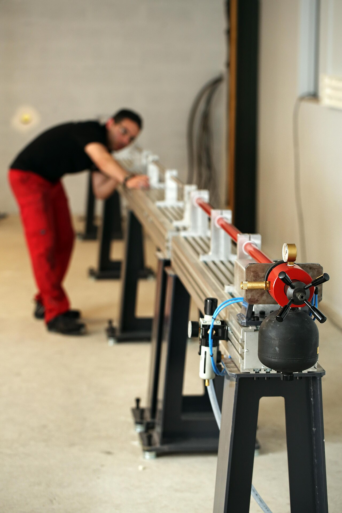
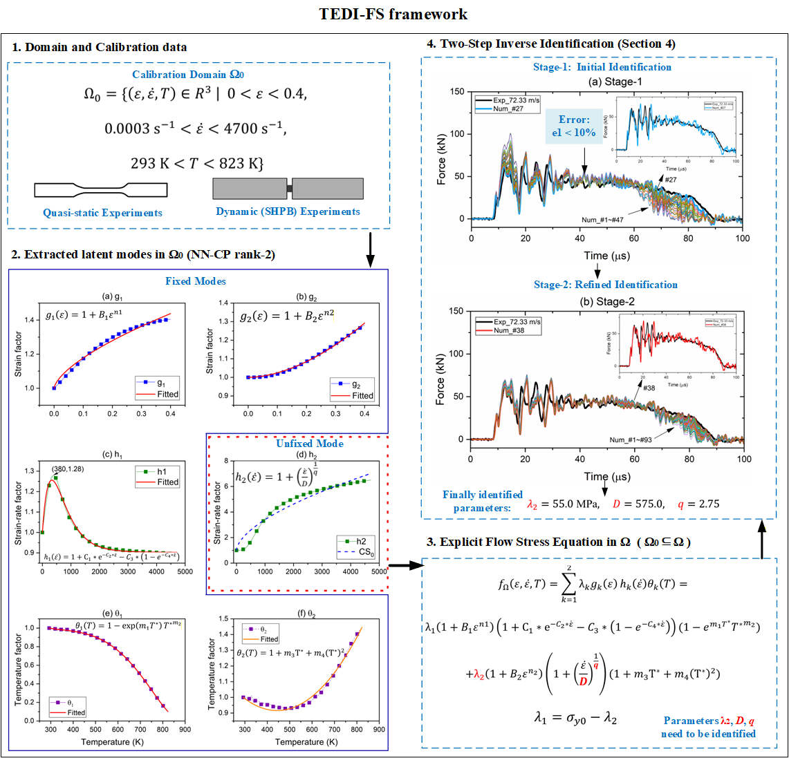

The mechanical behavior of engineering materials under extreme strain rates — as encountered in impact, crash, and ballistic events — is governed by their dynamic flow stress. For decades, the Johnson-Cook (J-C) equation has been the industry standard for representing this behavior, yet its mathematical foundations have remained unexamined and its calibration from real experimental data has been fraught with ambiguities.
This research builds a rigorous, data-driven programme of four first-authored papers in the International Journal of Impact Engineering (2023–2026): first verifying when decoupled constitutive equations are mathematically legitimate, then determining flow stress from varied strain-rate SHPB data, next extending the framework to the full three-dimensional (strain, strain-rate, temperature) constitutive surface, and now extrapolating the identified model beyond the experimentally calibrated domain to very-high strain rates, with direct validation against Taylor-Hopkinson impact tests. The methodology, combining SVD/CP tensor decomposition with artificial neural networks, applies beyond the J-C equation to any factorized constitutive model.
What is dynamic constitutive modeling, and why does every impact simulation depend on it?
When engineers simulate a car crash, a bird strike on a jet engine, a dropped phone, or a projectile hitting armor, they use explicit finite element software such as ABAQUS or LS-DYNA. The solver divides the structure into millions of small elements and computes, step by step, how each one deforms. At every time step, for every element, it must ask the material a question: at this strain, this strain rate, and this temperature, how much stress do you carry? The answer comes from the flow stress model (the dynamic constitutive model), and no simulation can be more accurate than the model it is fed.
Metals behave very differently under impact than in slow laboratory tests: at strain rates of 103 s-1 and beyond, their strength can rise well above the quasi-static value. Yet the models used in practice, most famously the Johnson-Cook equation, rest on assumptions that were rarely verified, are calibrated from limited Hopkinson-bar data, and are routinely extrapolated far outside the tested range. This research replaces each of those leaps of faith with a data-driven, mathematically grounded procedure: testing when the model form is legitimate, determining it directly from experimental data, and extrapolating it with validation against real impact experiments.


Background & Motivation
The Johnson-Cook equation assumes that strain hardening, strain-rate sensitivity, and thermal softening can be separated — i.e., the dynamic flow stress is a product (or sum of products) of independent functions of each variable. While this assumption drives nearly all impact simulations globally, its mathematical validity against actual experimental data had never been systematically tested.
Key Contributions
- First rigorous mathematical framework to verify the legitimacy of decoupled (factorized) flow stress equations using matrix/tensor decomposition
- SVD applied to 2D flow stress data arrays reveals when a rank-1 approximation is sufficient — the necessary condition for J-C type equations
- Quantitative criterion established for measuring the validity of decoupled assumptions for any material dataset
- Discrete flow stress representation method developed — avoids the need to assume a functional form
- Problems inherent to the conventional J-C parameter-fitting procedure identified and clarified
- Demonstrated on multiple materials: the legitimacy of decoupling varies by material and must be verified, not assumed

Background & Motivation
Traditional SHPB (Split Hopkinson Pressure Bar) tests require constant strain-rate conditions, which are practically difficult to achieve. Most experimental data contains mixed-strain-rate loading histories. Conventional approaches discard this "impure" data or fit it with simplified models, discarding valuable information and introducing systematic errors.
Key Contributions
- Framework for determining dynamic flow stress directly from varied strain-rate SHPB data — relaxing the conventional constant-strain-rate requirement
- Data qualification criteria developed to screen and validate raw SHPB experimental datasets
- ANN combined with SVD to generate a finely-resolved 2D flow stress matrix from sparse experimental points
- Five inherent uncertainties in conventional flow stress determination methods identified and addressed systematically
- Method demonstrated to produce superior accuracy compared to conventional J-C fitting procedures
- Provides both a discrete flow stress table and an equivalent analytical equation for direct use in FEM simulations

Background & Motivation
Real impact events involve simultaneous evolution of strain, strain-rate, and temperature. Part 2 extends the methodology to the complete three-dimensional constitutive surface — the full dependence of flow stress on all three thermomechanical variables simultaneously. CP (CANDECOMP/PARAFAC) tensor decomposition generalizes the SVD approach to 3D data arrays.
Key Contributions
- Extension of the ANN+decomposition framework from 2D (strain-rate only) to 3D (strain × strain-rate × temperature)
- CP (CANDECOMP/PARAFAC) decomposition applied to three-dimensional flow stress tensors
- ANN used to generate a finely-resolved 3D flow stress tensor from sparse multi-temperature SHPB data
- Thermal softening effect modeled with superior accuracy compared to modified Johnson-Cook approaches
- Demonstrated on C54400 phosphor copper alloy across wide strain-rate and temperature ranges
- Both discrete 3D constitutive tables and equivalent analytical equations derived for simulation use

Background & Motivation
Every flow stress model is calibrated within an experimentally accessible domain, in practice bounded by SHPB strain rates of about 103–104 s-1. Yet simulations of ballistic impact, crash, and penetration routinely evaluate these models at strain rates far beyond calibration, where their validity is unknown. This paper confronts that question directly: how can a flow stress model be validly extrapolated beyond its calibrated strain-rate domain, and how can the extrapolation be verified by experiment?
Key Contributions
- TEDI-FS framework: Tensor-Decomposition-based Extrapolation and Dynamic Identification of Flow Stress, integrating tensor decomposition, latent mode extrapolation, and Taylor-Hopkinson validation in one methodology
- Rank-2 non-negative CP decomposition separates strain, strain-rate, and temperature dependencies while preserving non-negativity and physical interpretability of the latent modes
- Model parameters identified within the quasi-static-to-SHPB domain without predefined coupling assumptions between thermomechanical variables
- Strain-rate latent modes extrapolated under consistency constraints, with the two branches analytically joined at the calibration boundary by construction
- Extrapolated model identified and validated through coupled Taylor-Hopkinson impact experiments and explicit finite element simulation, a two-stage inverse procedure
- Good agreement with measured impact responses at strain rates up to ~105 s-1, outperforming conventional and rank-1 extrapolation models

"These four papers form a complete, mathematically grounded pipeline for dynamic material characterization: verifying when empirical models are legitimate, determining constitutive equations from realistic (non-ideal) experimental data, resolving the full three-dimensional mechanical response, and finally extrapolating beyond the calibrated domain with direct experimental validation at very-high strain rates. Together they move flow stress modeling from assumed functional forms toward evidence-based representation across the entire strain-rate spectrum."— Research significance of the four-paper flow stress programme